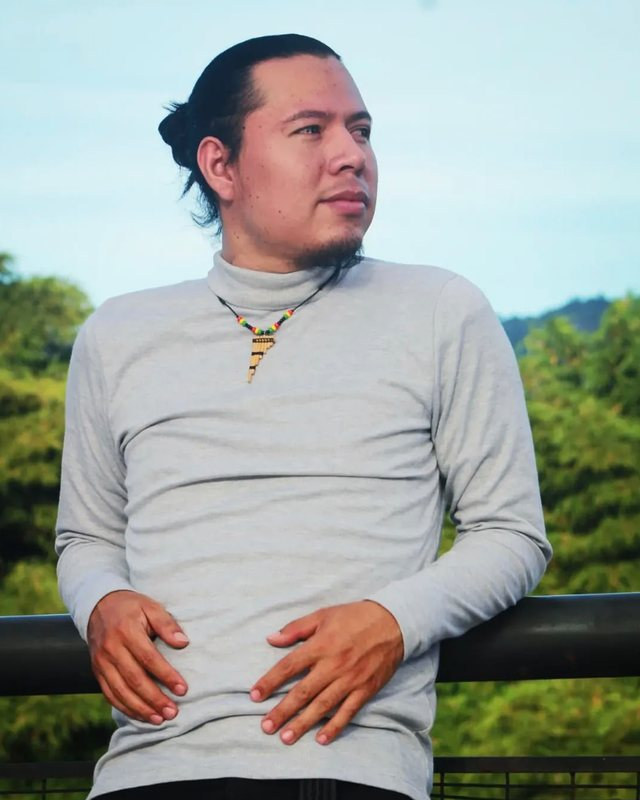
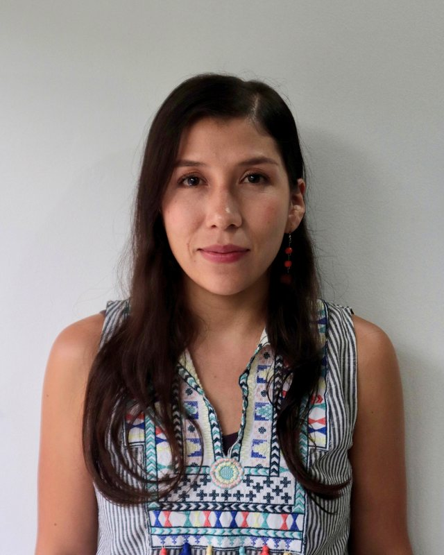

parce, ¿un tintico?
Ruta de cafés culturales del Valle de Aburrá
En Medellín, «parce, ¿un tintico?» es la manera más sencilla de invitar a alguien a sentarse y conversar. Con esa misma invitación te proponemos recorrer los cafés culturales del Valle de Aburrá: lugares con música, libros, arte y emprendimientos cafeteros de la región.
tintico
- Taza de café negro, sin leche. Es el diminutivo cariñoso de tinto, como se llama al café solo en Colombia.
- Invitación a hacer una pausa y conversar. «Parce, ¿un tintico?» quiere decir algo como «amigo, ¿nos tomamos un café?».
Parce viene de parcero: en Medellín, amigo o compañero. Y tinto viene del latín tinctus, «teñido», por el color oscuro de la bebida.
La misma palabra, otra bebida
Si no eres de aquí, «tinto» puede despistarte. Según dónde lo pidas, te pueden servir algo muy distinto:
- Colombia y Ecuador
- Café negro. Pide «un tinto» y te sirven una taza de café solo.
- España
- Vino tinto. «Un tinto» en un bar es una copa de vino, y el tinto de verano es vino tinto con gaseosa de limón.
- Argentina, Chile y otros países
- También vino tinto. Para el café se dice café solo, café negro o simplemente café.
- Venezuela
- Se usa para hablar del café, sobre todo cuando es negro y bien cargado.
For visitors: in Colombia a tinto is a cup of black coffee, not red wine. Tintico is its affectionate diminutive, and «parce, ¿un tintico?» means roughly “hey friend, fancy a coffee?”, the everyday way to invite someone to sit down and talk.
Una red de cafés con vida cultural
Parce, ¿un tintico? es un proyecto de la Universidad de Antioquia que reúne en un mapa los cafés del Valle de Aburrá donde pasan cosas: conciertos, lecturas, exposiciones y tertulias.
Queremos que más personas encuentren estos lugares, que los cafés se conozcan entre sí y que quienes toman café se acerquen a quienes lo cultivan, lo tuestan y lo preparan.
- Directorio digital
- Cada café aparece con su ubicación, su propuesta y la forma de llegar.
- Mapa interactivo
- Explora la ruta por barrio o municipio y arma tu propio recorrido.
- Encuentro entre cafés y público
- Conectamos a consumidores con productores y distribuidores de café de la región.
- Programación artística y comunitaria
- Impulsamos la música, la literatura y el arte que ya habitan estos espacios.
El mapa de la ruta
Toca cualquier punto para ver el café, su dirección y cómo llegar. El mapa crece a medida que se suman nuevos lugares.
Algunos cafés de la ruta
Una muestra de los lugares que están en el mapa. Toca el nombre de cada uno para ver su Instagram.
-
 El café
El café
El Café de Otraparte
Envigado
Literatura, pensamiento, arte y patrimonio en la casa museo del escritor Fernando González.
Foto: Corporación Otraparte
-
 El café
El café
Café Porfirio, Ateneo
La Candelaria, Medellín
Teatro, galería y programación cultural alrededor de la mesa del café.
-
 El sector: carrera 42
El sector: carrera 42
Indeleble Café Cultural
Centro, Medellín
Música, encuentros y programación cultural. Un lugar para quedarse a conversar y escuchar.
Foto: Felipe Restrepo Acosta, CC BY-SA 4.0
-
 Cerca: Teatro Pablo Tobón
Cerca: Teatro Pablo Tobón
El Acontista
Centro, Medellín
Librería y cafetería con tertulias. Un clásico del centro para leer y conversar.
Foto: Felipe Restrepo Acosta, CC BY-SA 4.0
-
 El barrio: Biblioteca Piloto
El barrio: Biblioteca Piloto
Exlibris Café Libros
Carlos E. Restrepo, Medellín
Librería y café para el encuentro literario, en el barrio de la Biblioteca Pública Piloto.
Foto: Alejandro Rojas (SajoR), CC BY-SA 4.0
-
 El sector: Parque Santander
El sector: Parque Santander
Lo que dicen de la ruta
Gracias al mapa encontramos cafés para nuestras tertulias literarias que no conocíamos, algunos a pocas cuadras de la casa.
Quiénes estamos detrás
Somos investigadores, gestores culturales, comunicadores y desarrolladores de la Universidad de Antioquia, con ganas de dar visibilidad a los cafés culturales de Medellín y del Valle de Aburrá.
-

Jhon Fredy Pinta
Coordina las alianzas culturales y el encuentro entre consumidores y distribuidores de café.
-

Vanessa Vásquez Amado
Gestiona los contenidos, las redes y las reseñas de los cafés, y desarrolla el mapa interactivo.
Inscribe tu café
¿Tienes un café con música, libros, arte o tertulia? Cuéntanos sobre él y lo sumamos al mapa. Te respondemos al correo que nos dejes.
¿Prefieres escribirnos directamente?
parceuntintico@gmail.com